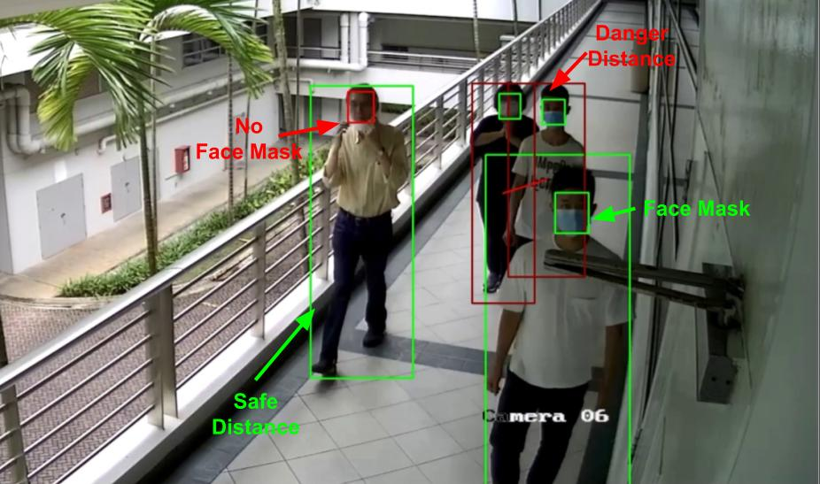
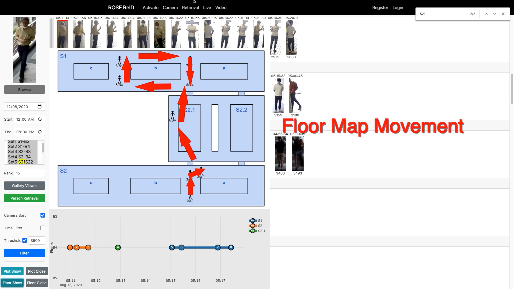
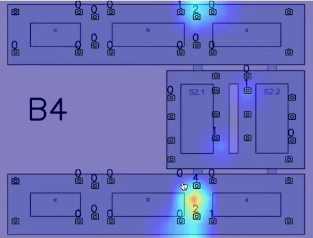
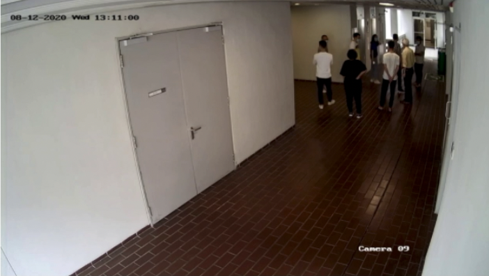

A team from the ROSE Lab won 1st place at the IEEE Signal Processing Society's (SPS) 5-Minute Video Clip Contest (5-MICC) with the theme "Fight the Pandemic". This contest was organized in conjunction with the IEEE International Conference on Image Processing (ICIP) 2020.
Team
Dr. Lin Shan (Team Leader, Research Fellow) with undergraduate students from NTU School of Electrical & Electronic Engineering, University of Electronic Science & Technology China (UESTC), and Indian Institute of Technology Indore. Supervised by Prof. Alex Kot, Director of ROSE Lab, NTU.
System Overview
Our entry was entitled "Visual Analytics System for Pandemic Management during COVID-19". It utilizes AI-based video analytics for contact tracing and pandemic control functions. By using various AI models developed by the ROSE Lab, the proposed platform performs quick person searches and contact tracking within a network of surveillance cameras, while proactively monitoring for safety violations.
Person Detection / Face Mask Detection / Social Distance Estimation

Person Re-identification (Contact Tracing)

Real-time Crowd Heat Map / Live Video Streaming

